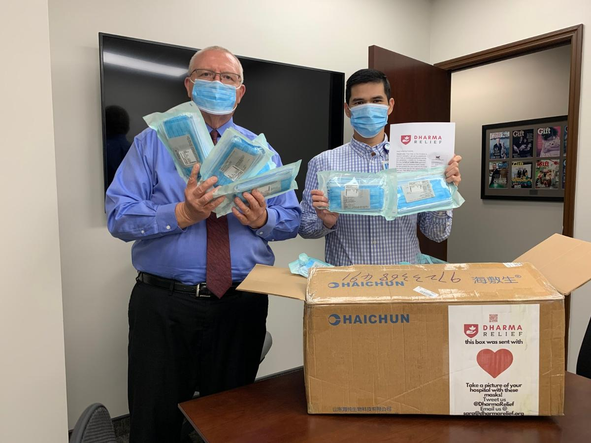

Sara Khan
Sr. Data Analyst
Public health informatics and clinical analytics. I build the pipelines, find the gaps, and translate data into decisions people can act on.
CDC · Emory · Tallahassee Memorial
I'm a data analyst with roots in public health. I've built surveillance pipelines for the WHO, scraped the only cross-league NBA/WNBA dataset that existed because none was available, and untangled donor records spread across three different systems to help a nonprofit understand where its money was actually going.
Data Analytics
Global Polio Surveillance Analytics Pipeline (2017–2019)
At the CDC Global Immunization Division I found a data quality problem hiding in plain sight. Applying the same surveillance KPIs to a province of 5 million people as one of 50,000 was accidentally hiding virus circulation in small areas. I designed a Spatial Binning method that aggregated districts into standardized units of 200,000 children and built a production ETL pipeline pulling from WHO POLIS (79 countries) and WorldPop via SQL into R. Added four automated surveillance flags to catch implausible data before it reached the IMB. Maintained the full codebase on GitLab for two years.

NBA x WNBA Player Efficiency Rating Dashboard (2019)
As president of the CDC R Users Group and adjunct instructor at Emory, I was invited to speak at R-Ladies Atlanta, hosted at the Atlanta Hawks facility. No cross-league Player Efficiency Rating comparison existed publicly. WNBA data was so scarce I had to hand-scrape player biographies from Wikipedia and supplement with a custom script against Basketball-Reference.com. The resulting Shiny app lets users compare any two players across standardized career timelines, explore NBA vs. WNBA PER trends, and examine how career length shapes performance curves by league and gender.

Donor Revenue Analysis, Tallahassee Chan Center (2025–2026)
Leadership suspected revenue was falling but couldn't explain it. Donor records lived across three completely disconnected systems: Donorbox, Luma, and old Excel sheets. I downloaded and merged all three in R, deduplicated identities across sources, and tracked each person's payment history, retreat attendance, and donation tenure. The picture was clear: only about 100 people were actively donating, and a much larger group was accessing retreats without contributing anything. This drove a new registration policy (10% scholarship cap) and a membership survey to test recurring revenue viability.

Publications
Selected publications (data visualization and methods contributor)
- VanderEnde K, Voorman A, Khan S, Anand A, Snider CJ, Goel A, Wassilak S. New analytic approaches for analyzing and presenting polio surveillance data to supplement standard performance indicators. Vaccine: X. 2020;4:100059. doi:10.1016/j.jvacx.2020.100059 [PMC7090369]
- Lind JN, Interrante JD, Ailes EC, Gilboa SM, Khan S, Frey MT, Dawson AL, Honein MA, Dowling NF, Razzaghi H, Creanga AA, Broussard CS. Maternal Use of Opioids During Pregnancy and Congenital Malformations: A Systematic Review. Pediatrics. 2017;139(6):e20164131. doi:10.1542/peds.2016-4131 [PMID 28562278]
- Zaman K, Kovacs SD, VanderEnde K, Aziz A, Yunus M, Khan S, Snider CJ, An Q, Estivariz CF, Oberste MS, Pallansch MA, Anand A. Assessing the immunogenicity of three different inactivated polio vaccine schedules for use after oral polio vaccine cessation: an open label, phase IV, randomized controlled trial. Vaccine. 2021;39(40):5814–5821. doi:10.1016/j.vaccine.2021.08.065 [PMID 34481702]
Dharma Relief — COVID-19 Medical Supply Initiative (2020)
When North American hospitals faced a critical shortage of surgical masks in early 2020, I took on full operational oversight of what became the Dharma Relief initiative — a grassroots Buddhist community response that moved faster than most government programs.
The shortage had structural roots: China produced roughly half the world's face masks, exports had halted as the virus spread, and US hospitals couldn't directly contact mainland Chinese manufacturers without mediation. We filled that gap.
Starting March 30, 2020, I coordinated 58 volunteers and 24 Buddhist centers across North America to raise $649,555 from 2,766 donations in seven weeks (our projected goal was $100,000 — we passed it on day two). I vetted an FDA-approved manufacturer in mainland China, placed volunteers on the ground there for quality control, and secured a $30,000 transportation grant from Flexport to reach MedShare's hospital network.
We delivered 1.2 million masks to 173 hospitals across 34 U.S. states, Puerto Rico, Canada, and Tijuana, Mexico. Additional masks reached clinics worldwide through MedShare's distribution network.
{kind=link}

Volunteer & Leadership
- Dharma Relief, Founding Operations Lead (2020–2026): See above.
-
IRC Refugee Resettlement Volunteer (2022–Present)
Support housing setup and community integration for refugee families.
Also: I Make Things
Data is one kind of storytelling. Social media graphics, podcast cover art, email campaigns, and infographics are another. I've designed materials for the Tallahassee Chan Center, Dharma Relief, and Dragonfly Yoga, among others.
Interests
I like the intersection of technology and mindfulness. Building AI side projects, playing new video games, and balancing all of it with meditation, yoga, and hiking.